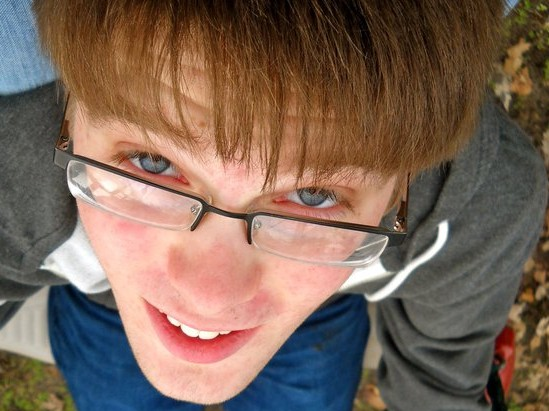

Hi there, I'm Jacob!
I am an Electrical and Computer Engineering (ECE) student at the Olin College of Engineering in Needham, MA, where I take courses such as Computational Robotics, Controls, Principles of Engineering, Software Design, EE Prototyping, Signals and Systems, and many more! Check out the Projects page for some of the things I've done!
In additions to classes, I'm also involved in a puzzles club where we do things such as solve cryptic crosswords, do puzzle hunts, and compete in the Microsoft College Puzzle Challenge.
 I've always enjoyed music and have played the trumpet since fifth grade. I have been a co-navigator of the Olin Conductorless Orchestra and a co-leader of the CheeriOs (Olin's non-auditioned a cappella singing group).
I've always enjoyed music and have played the trumpet since fifth grade. I have been a co-navigator of the Olin Conductorless Orchestra and a co-leader of the CheeriOs (Olin's non-auditioned a cappella singing group).